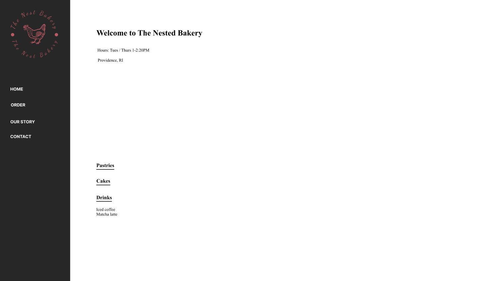
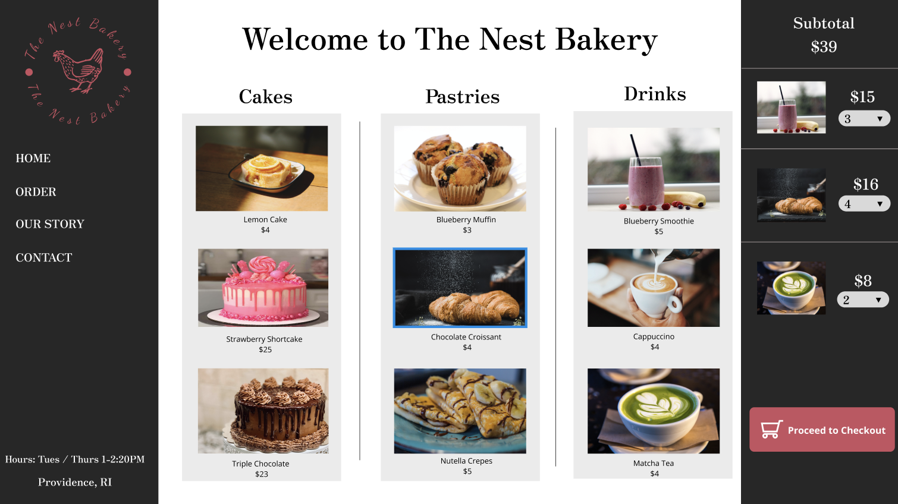
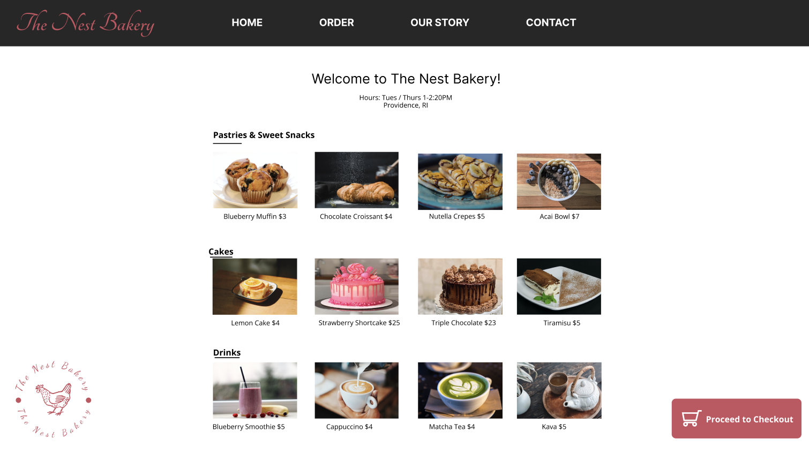
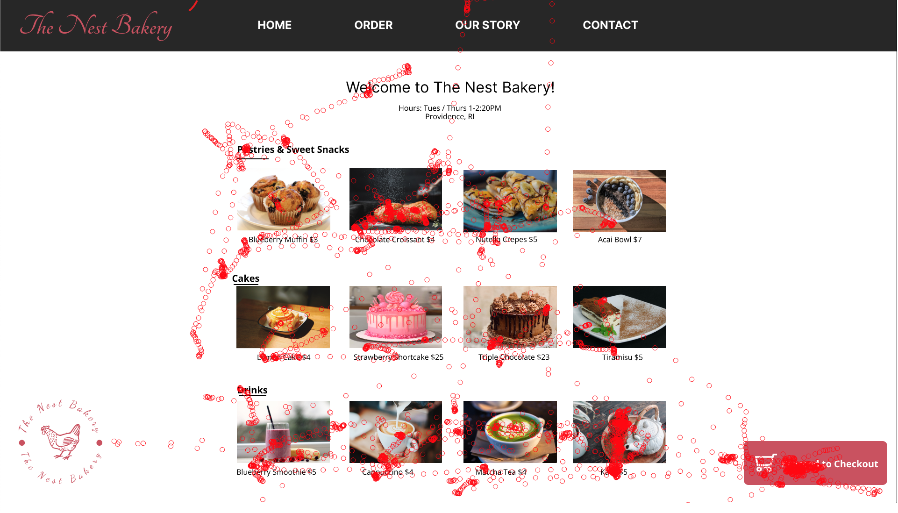
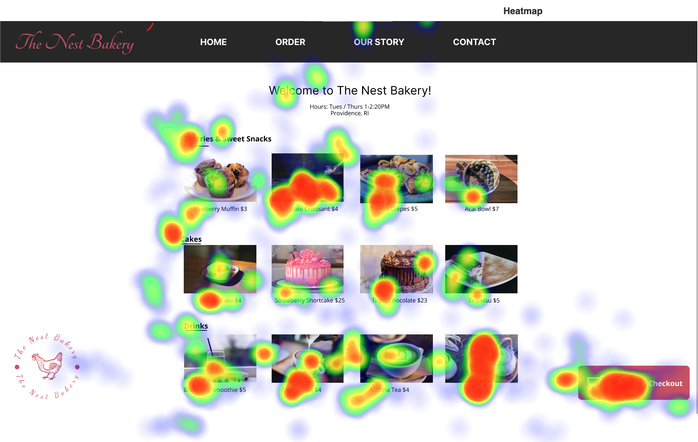

Context
Well, the UIUX world is pretty wide and there is no limit to the creativity one can bring. Sky's the limit! In such a space, there are some major elements that need to come together to produce accessible and easy to navigate solutions. The entire premise is to create a seamless experience while interacting with the interface with zero guidance. In this respect, we should be testing if our intentions while creating an interface is matching with the real user experience. In this project we design two interfaces of the same bakery and focus on how the direction of the flow impacts the user experience.
Planning Changes and Formulating Hypothesis
1) We start with the following template to think about the possible changes we can make on it.
Redesigning the Website
2) Then we created the following designs as our Version A and Version B (as in A/B testing 😜) For Version A we decided to create a left to right and a top to bottom flow, and for Version B a top to bottom flow.
Here's Version A
Here's Version B
Conducting the Eye Tracking Tests
3) Once we had the designs, we went to the computer lab to utilize an eye tracker that would enable us to investigate the eye movement of a user while interacting with our interfaces.Here's Eye Tracking for Version A
Here's Eye Tracking for Version B
Analyze the Data + Heatmap Generation
4) Then to signify the points of condense attention, we created heatmaps using our eye tracking data.Here's Eye Tracking for Version A
Here's Eye Tracking for Version B
Results & Takeaways
The results matched with our expectations as the time to complete the same task on the two versions differed and Version A was much faster for both of our experimentees. I found this project quite interesting as it was a pretty unique way of observing user behavior in a depth. I should get myself an eye tracking device!